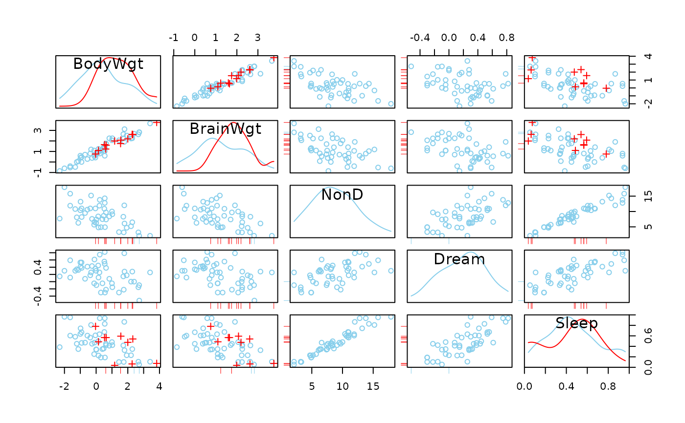

Scatterplot matrix with information about missing/imputed values
Source:R/scattmatrixMiss.R
scattmatrixMiss.RdScatterplot matrix in which observations with missing/imputed values in certain variables are highlighted.
scattmatrixMiss( x, delimiter = NULL, highlight = NULL, selection = c("any", "all"), plotvars = NULL, col = c("skyblue", "red", "orange"), alpha = NULL, pch = c(1, 3), lty = par("lty"), diagonal = c("density", "none"), interactive = TRUE, ... )
Arguments
| x | a matrix or |
|---|---|
| delimiter | a character-vector to distinguish between variables and
imputation-indices for imputed variables (therefore, |
| highlight | a vector giving the variables to be used for highlighting.
If |
| selection | the selection method for highlighting missing/imputed
values in multiple highlight variables. Possible values are |
| plotvars | a vector giving the variables to be plotted. If |
| col | a vector of length three giving the colors to be used in the plot. The second/third color will be used for highlighting missing/imputed values. |
| alpha | a numeric value between 0 and 1 giving the level of
transparency of the colors, or |
| pch | a vector of length two giving the plot characters. The second plot character will be used for the highlighted observations. |
| lty | a vector of length two giving the line types for the density
plots in the diagonal panels (if |
| diagonal | a character string specifying the plot to be drawn in the
diagonal panels. Possible values are |
| interactive | a logical indicating whether the variables to be used for highlighting can be selected interactively (see ‘Details’). |
| ... | for |
Details
scattmatrixMiss uses pairsVIM() with a panel function
that allows highlighting of missing/imputed values.
If interactive=TRUE, the variables to be used for highlighting can be
selected interactively. Observations with missing/imputed values in any or
in all of the selected variables are highlighted (as determined by
selection). A variable can be added to the selection by clicking in
a diagonal panel. If a variable is already selected, clicking on the
corresponding diagonal panel removes it from the selection. Clicking
anywhere else quits the interactive session.
The graphical parameter oma will be set unless supplied as an
argument.
TKRscattmatrixMiss behaves like scattmatrixMiss, but uses
tkrplot to embed the plot in a Tcl/Tk window.
This is useful if the number of variables is large, because scrollbars allow
to move from one part of the plot to another.
Note
Some of the argument names and positions have changed with version 1.3
due to a re-implementation and for more consistency with other plot
functions in VIM. For back compatibility, the argument
colcomb can still be supplied to ...{} and is handled
correctly. Nevertheless, it is deprecated and no longer documented. Use
highlight instead. The arguments smooth, reg.line and
legend.plot are no longer used and ignored if supplied.
References
M. Templ, A. Alfons, P. Filzmoser (2012) Exploring incomplete data using visualization tools. Journal of Advances in Data Analysis and Classification, Online first. DOI: 10.1007/s11634-011-0102-y.
See also
pairsVIM(), marginmatrix()
Other plotting functions:
aggr(),
barMiss(),
histMiss(),
marginmatrix(),
marginplot(),
matrixplot(),
mosaicMiss(),
pairsVIM(),
parcoordMiss(),
pbox(),
scattJitt(),
scattMiss(),
spineMiss()
Author
Andreas Alfons, Matthias Templ, modifications by Bernd Prantner
Examples
data(sleep, package = "VIM") ## for missing values x <- sleep[, 1:5] x[,c(1,2,4)] <- log10(x[,c(1,2,4)]) scattmatrixMiss(x, highlight = "Dream")#> Warning: variable 'Dream' contains infinite values## for imputed values x_imp <- kNN(sleep[, 1:5]) x_imp[,c(1,2,4)] <- log10(x_imp[,c(1,2,4)]) scattmatrixMiss(x_imp, delimiter = "_imp", highlight = "Dream")#> Warning: variable 'Dream' contains infinite values